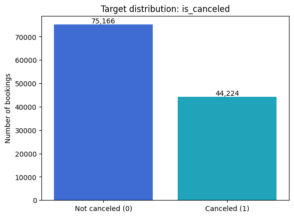

01 · Data Understanding
CIS 517 – Hotel Booking Cancellation Prediction Using Data Mining
Goal: load the Hotel Booking Demand dataset and understand its size, attributes and data types.
ــــــــــــــــــــــــــــــــــــــــــــــــــــــــــــــــــــــــــــــــــــــــــــــــــــــــــــــــــــــــــــــــــــــــــــــــــــــــــــــــــــــــــــــــــــــــــــــــــــــــــــــــــــــــــــــــــــــــــــــــــــــــــــــــــــــــــــــــــــــــــــــــــــــــــــــ
1. Import libraries
We use pandas to load and manipulate the data as a table (DataFrame) and NumPy for numerical operations. The display option shows all 32 columns instead of hiding some of them.
import pandas as pd import numpy as np
2. Load the dataset
The raw file is read from data/raw/ and is never modified; cleaned versions will be saved to data/processed/.
We check the size of the dataset and preview the first five bookings.
df = pd.read_csv("../data/raw/hotel_bookings.csv") print("Rows:", df.shape[0]) print("Columns:", df.shape[1]) df.head()
Rows: 119390 Columns: 32
| hotel | is_canceled | lead_time | arrival_date_year | arrival_date_month | arrival_date_week_number | arrival_date_day_of_month | stays_in_weekend_nights | stays_in_week_nights | adults | ... | deposit_type | agent | company | days_in_waiting_list | customer_type | adr | required_car_parking_spaces | total_of_special_requests | reservation_status | reservation_status_date | |
|---|---|---|---|---|---|---|---|---|---|---|---|---|---|---|---|---|---|---|---|---|---|
| 0 | Resort Hotel | 0 | 342 | 2015 | July | 27 | 1 | 0 | 0 | 2 | ... | No Deposit | NaN | NaN | 0 | Transient | 0.0 | 0 | 0 | Check-Out | 2015-07-01 |
| 1 | Resort Hotel | 0 | 737 | 2015 | July | 27 | 1 | 0 | 0 | 2 | ... | No Deposit | NaN | NaN | 0 | Transient | 0.0 | 0 | 0 | Check-Out | 2015-07-01 |
| 2 | Resort Hotel | 0 | 7 | 2015 | July | 27 | 1 | 0 | 1 | 1 | ... | No Deposit | NaN | NaN | 0 | Transient | 75.0 | 0 | 0 | Check-Out | 2015-07-02 |
| 3 | Resort Hotel | 0 | 13 | 2015 | July | 27 | 1 | 0 | 1 | 1 | ... | No Deposit | 304.0 | NaN | 0 | Transient | 75.0 | 0 | 0 | Check-Out | 2015-07-02 |
| 4 | Resort Hotel | 0 | 14 | 2015 | July | 27 | 1 | 0 | 2 | 2 | ... | No Deposit | 240.0 | NaN | 0 | Transient | 98.0 | 0 | 1 | Check-Out | 2015-07-03 |
5 rows × 32 columns
3. Data types and missing values
info() lists every attribute with its data type and the number of non-missing values.
Any column with fewer than 119,390 non-null values contains missing values.
df.info()
<class 'pandas.core.frame.DataFrame'> RangeIndex: 119390 entries, 0 to 119389 Data columns (total 32 columns): # Column Non-Null Count Dtype --- ------ -------------- ----- 0 hotel 119390 non-null object 1 is_canceled 119390 non-null int64 2 lead_time 119390 non-null int64 3 arrival_date_year 119390 non-null int64 4 arrival_date_month 119390 non-null object 5 arrival_date_week_number 119390 non-null int64 6 arrival_date_day_of_month 119390 non-null int64 7 stays_in_weekend_nights 119390 non-null int64 8 stays_in_week_nights 119390 non-null int64 9 adults 119390 non-null int64 10 children 119386 non-null float64 11 babies 119390 non-null int64 12 meal 119390 non-null object 13 country 118902 non-null object 14 market_segment 119390 non-null object 15 distribution_channel 119390 non-null object 16 is_repeated_guest 119390 non-null int64 17 previous_cancellations 119390 non-null int64 18 previous_bookings_not_canceled 119390 non-null int64 19 reserved_room_type 119390 non-null object 20 assigned_room_type 119390 non-null object 21 booking_changes 119390 non-null int64 22 deposit_type 119390 non-null object 23 agent 103050 non-null float64 24 company 6797 non-null float64 25 days_in_waiting_list 119390 non-null int64 26 customer_type 119390 non-null object 27 adr 119390 non-null float64 28 required_car_parking_spaces 119390 non-null int64 29 total_of_special_requests 119390 non-null int64 30 reservation_status 119390 non-null object 31 reservation_status_date 119390 non-null object dtypes: float64(4), int64(16), object(12) memory usage: 29.1+ MB
4. Numeric vs. categorical attributes
We separate numeric and categorical attributes because each type is handled differently later: numeric attributes are summarised, scaled and checked for outliers, while categorical attributes are counted and encoded.
numeric_cols = df.select_dtypes(include="number").columns.tolist() categorical_cols = df.select_dtypes(exclude="number").columns.tolist() print(f"Numeric ({len(numeric_cols)}):", numeric_cols) print() print(f"Categorical ({len(categorical_cols)}):", categorical_cols)
Numeric (20): ['is_canceled', 'lead_time', 'arrival_date_year', 'arrival_date_week_number', 'arrival_date_day_of_month', 'stays_in_weekend_nights', 'stays_in_week_nights', 'adults', 'children', 'babies', 'is_repeated_guest', 'previous_cancellations', 'previous_bookings_not_canceled', 'booking_changes', 'agent', 'company', 'days_in_waiting_list', 'adr', 'required_car_parking_spaces', 'total_of_special_requests'] Categorical (12): ['hotel', 'arrival_date_month', 'meal', 'country', 'market_segment', 'distribution_channel', 'reserved_room_type', 'assigned_room_type', 'deposit_type', 'customer_type', 'reservation_status', 'reservation_status_date']
5. Missing values
Count and percentage of missing values per attribute (only attributes with at least one missing value are shown). The percentage helps decide the treatment: fill a few missing values, or drop / transform an attribute that is mostly empty.
missing = df.isnull().sum() missing = missing[missing > 0].sort_values(ascending=False) missing_table = pd.DataFrame({ "missing": missing, "percent": (missing / len(df) * 100).round(2) }) missing_table
| missing | percent | |
|---|---|---|
| company | 112593 | 94.31 |
| agent | 16340 | 13.69 |
| country | 488 | 0.41 |
| children | 4 | 0.00 |
6. Descriptive statistics (numeric attributes)
Summary statistics for every numeric attribute: count, mean, standard deviation, minimum, quartiles and maximum. Unusual minimums or maximums point to invalid values and outliers that must be handled in preprocessing.
df[numeric_cols].describe().T.round(2)
| count | mean | std | min | 25% | 50% | 75% | max | |
|---|---|---|---|---|---|---|---|---|
| is_canceled | 119390.0 | 0.37 | 0.48 | 0.00 | 0.00 | 0.00 | 1.0 | 1.0 |
| lead_time | 119390.0 | 104.01 | 106.86 | 0.00 | 18.00 | 69.00 | 160.0 | 737.0 |
| arrival_date_year | 119390.0 | 2016.16 | 0.71 | 2015.00 | 2016.00 | 2016.00 | 2017.0 | 2017.0 |
| arrival_date_week_number | 119390.0 | 27.17 | 13.61 | 1.00 | 16.00 | 28.00 | 38.0 | 53.0 |
| arrival_date_day_of_month | 119390.0 | 15.80 | 8.78 | 1.00 | 8.00 | 16.00 | 23.0 | 31.0 |
| stays_in_weekend_nights | 119390.0 | 0.93 | 1.00 | 0.00 | 0.00 | 1.00 | 2.0 | 19.0 |
| stays_in_week_nights | 119390.0 | 2.50 | 1.91 | 0.00 | 1.00 | 2.00 | 3.0 | 50.0 |
| adults | 119390.0 | 1.86 | 0.58 | 0.00 | 2.00 | 2.00 | 2.0 | 55.0 |
| children | 119386.0 | 0.10 | 0.40 | 0.00 | 0.00 | 0.00 | 0.0 | 10.0 |
| babies | 119390.0 | 0.01 | 0.10 | 0.00 | 0.00 | 0.00 | 0.0 | 10.0 |
| is_repeated_guest | 119390.0 | 0.03 | 0.18 | 0.00 | 0.00 | 0.00 | 0.0 | 1.0 |
| previous_cancellations | 119390.0 | 0.09 | 0.84 | 0.00 | 0.00 | 0.00 | 0.0 | 26.0 |
| previous_bookings_not_canceled | 119390.0 | 0.14 | 1.50 | 0.00 | 0.00 | 0.00 | 0.0 | 72.0 |
| booking_changes | 119390.0 | 0.22 | 0.65 | 0.00 | 0.00 | 0.00 | 0.0 | 21.0 |
| agent | 103050.0 | 86.69 | 110.77 | 1.00 | 9.00 | 14.00 | 229.0 | 535.0 |
| company | 6797.0 | 189.27 | 131.66 | 6.00 | 62.00 | 179.00 | 270.0 | 543.0 |
| days_in_waiting_list | 119390.0 | 2.32 | 17.59 | 0.00 | 0.00 | 0.00 | 0.0 | 391.0 |
| adr | 119390.0 | 101.83 | 50.54 | -6.38 | 69.29 | 94.58 | 126.0 | 5400.0 |
| required_car_parking_spaces | 119390.0 | 0.06 | 0.25 | 0.00 | 0.00 | 0.00 | 0.0 | 8.0 |
| total_of_special_requests | 119390.0 | 0.57 | 0.79 | 0.00 | 0.00 | 0.00 | 1.0 | 5.0 |
7. Categorical attributes
Number of distinct values (cardinality) of each categorical attribute. High-cardinality attributes (many distinct values) need special treatment before encoding.
df[categorical_cols].nunique().sort_values(ascending=False)
reservation_status_date 926 country 177 arrival_date_month 12 assigned_room_type 12 reserved_room_type 10 market_segment 8 meal 5 distribution_channel 5 customer_type 4 deposit_type 3 reservation_status 3 hotel 2 dtype: int64
8. Value distribution of key categorical attributes
Frequency and percentage of each value for the main categorical attributes.
for col in ["hotel", "deposit_type", "market_segment", "customer_type", "meal"]: counts = df[col].value_counts() percent = df[col].value_counts(normalize=True).mul(100).round(1) print(f"--- {col} ---") print(pd.DataFrame({"count": counts, "percent": percent})) print()
--- hotel ---
count percent
hotel
City Hotel 79330 66.4
Resort Hotel 40060 33.6
--- deposit_type ---
count percent
deposit_type
No Deposit 104641 87.6
Non Refund 14587 12.2
Refundable 162 0.1
--- market_segment ---
count percent
market_segment
Online TA 56477 47.3
Offline TA/TO 24219 20.3
Groups 19811 16.6
Direct 12606 10.6
Corporate 5295 4.4
Complementary 743 0.6
Aviation 237 0.2
Undefined 2 0.0
--- customer_type ---
count percent
customer_type
Transient 89613 75.1
Transient-Party 25124 21.0
Contract 4076 3.4
Group 577 0.5
--- meal ---
count percent
meal
BB 92310 77.3
HB 14463 12.1
SC 10650 8.9
Undefined 1169 1.0
FB 798 0.7
9. Target attribute: is_canceled
Distribution of the class label we want to predict (0 = not canceled, 1 = canceled). A strongly imbalanced target would make accuracy misleading, so we check the balance first.
import matplotlib.pyplot as plt import seaborn as sns target = df["is_canceled"].value_counts().sort_index() print(target) print(f"\nCancellation rate: {df['is_canceled'].mean():.1%}") ax = sns.countplot(data=df, x="is_canceled", hue="is_canceled", palette=["#2563eb", "#06b6d4"], legend=False) ax.set_xticks([0, 1]) ax.set_xticklabels(["Not canceled (0)", "Canceled (1)"]) ax.set_xlabel("") ax.set_ylabel("Number of bookings") ax.set_title("Target distribution: is_canceled") for bar in ax.patches: ax.annotate(f"{int(bar.get_height()):,}", (bar.get_x() + bar.get_width() / 2, bar.get_height()), ha="center", va="bottom") plt.show()
is_canceled 0 75166 1 44224 Name: count, dtype: int64 Cancellation rate: 37.0%

10. Duplicate records
Number of rows that are exact copies of another row (identical on all 32 attributes).
dup_count = df.duplicated().sum() print(f"Exact duplicate rows: {dup_count:,} ({dup_count / len(df):.1%} of the data)")
Exact duplicate rows: 31,994 (26.8% of the data)
ــــــــــــــــــــــــــــــــــــــــــــــــــــــــــــــــــــــــــــــــــــــــــــــــــــــــــــــــــــــــــــــــــــــــــــــــــــــــــــــــــــــــــــــــــــــــــــــــــــــــــــــــــــــــــــــــــــــــــــــــــــــــــــــــــــــــــــــــــــــــــــــــــــــــــــــ
Summary of findings
Dataset: 119,390 bookings × 32 attributes (20 numeric, 12 categorical) from two hotels in Portugal (City Hotel 66%, Resort Hotel 34%), with arrival dates from 2015 to 2017.
Target: is_canceled — 37.0% of bookings were canceled. A model that always predicts
"not canceled" would already reach 63.0% accuracy (baseline), so we will also use precision, recall and F1.
| Finding | Evidence | Action in preprocessing |
|---|---|---|
| Duplicate records | 31,994 exact duplicate rows (26.8%) | Investigate and remove |
| Mostly empty attribute | company missing in 94.3% of rows |
Replace with a flag: has_company (0/1) |
| Missing values | agent 13.7%, country 0.4%, children 4 rows |
agent → has_agent flag; fill country and children |
| Invalid values | negative adr (−6.38); bookings with 0 guests or 0 nights |
Remove invalid records |
| Extreme value | adr maximum of 5,400 while 75% of rates are below ~126 |
Check and remove if it is an error |
| Duplicate category labels | meal: "Undefined" and "SC" both mean no meal |
Merge into one value |
| High cardinality | country has 177 distinct values |
Group rare countries before encoding |
| Data leakage | reservation_status and its date reveal the outcome |
Exclude from the classification model |
Next step: 02_preprocessing.ipynb — apply these actions and save the cleaned dataset to data/processed/.